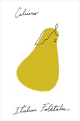

Italian Folktales
Fiabe italiane
This one took a while! (Granted, it's something like 1200 pages in the edition I read.) I was struck by the similarities and differences to fairy tales I'm more familiar with, from the Grimm line; even with that, though, a lot of these stories were surprising in their details. The reliance on real places (England, first of all -- but Paris, Portugal, Spain, Russia, etc.) was one such element. I can't help but think I'm missing some historical context in how Italians (in various regions) thought about these other countries, or what stereotypes they had of various Christian figures like St. Peter such that the stories about him acting ... rather unsaintlike made sense.
Beyond that, though, these stories are free and unconstrained by normal notions of plot and continuity. I told a couple of folks that they often reminded me of a five-year-old narrating their dream, with new elemenmts and ideas and story hooks introduced and abandoned seemingly at random. There are at least a few stories where there's a big traditional setup for a story, and then poof, all of it was just to get a kid who goes off into a completely different tale.
I heard a talk by Jasper Fforde at one point where he talked about leaving narrative offramps (because of his metafictional, timetravelly books). Some of these stories are more like seeing whole cities of ideas and plots as you speed by them on the freeway. They're there, and you get a hint of their skyline, and then they're gone and you're on to the next, wholly unrelated thing.
Anyway, this was a fun, if long, read. I'm not sure how relevant it is to the body of Calvino's works, but I'm going to keep an eye out for the _absolute acceptance_ of the fantastic that these stories exhibited. Magic exists, obviously, and it's a plain fact of the world. Why would you even start to question that this random old woman's cryptic instructions would solve your problem? I think some of the more magically-realist reads I have coming up would benefit from me coming in with that sort of attitude.